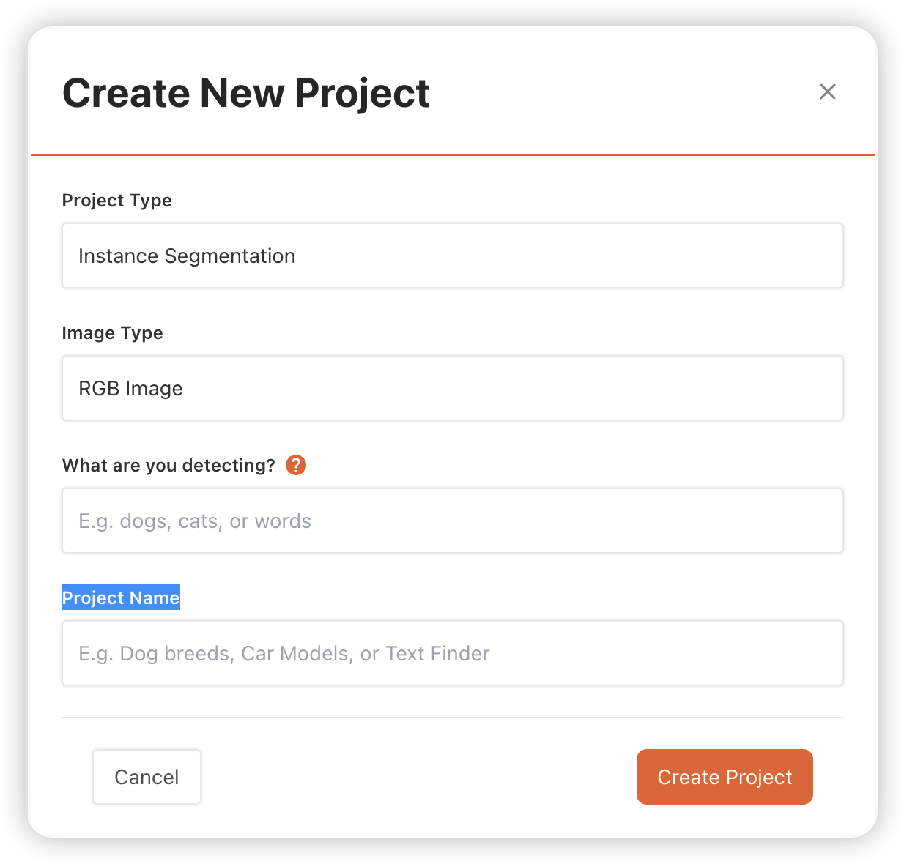
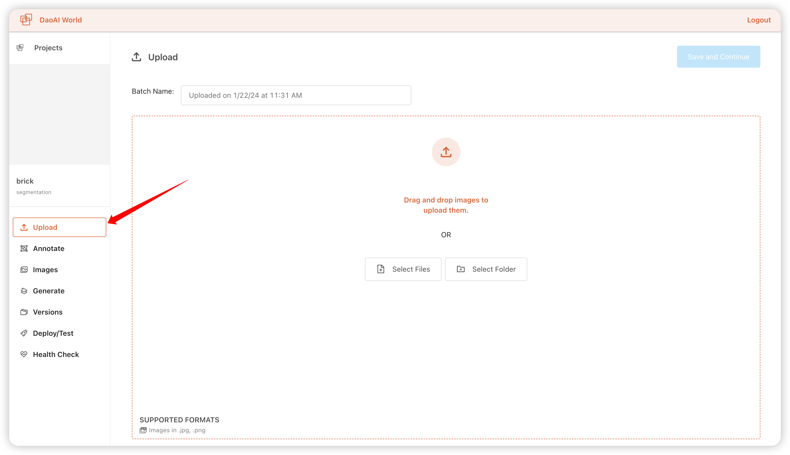
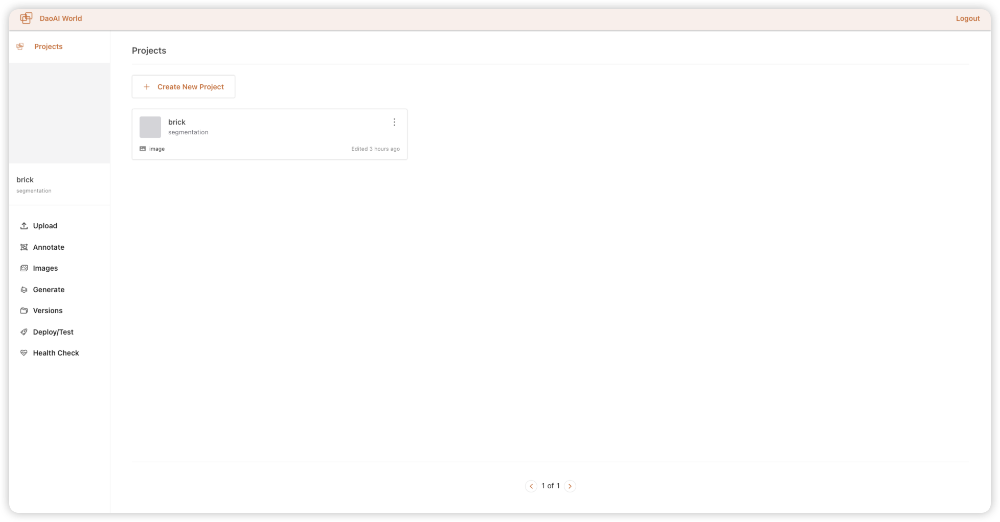

Create a project
Project in DAOAI_World
A project houses the images and annotations for your project. All projects exist within one workspace. Once images are annotated, they can generate a version, which is a copy of your images and annotations at the time, augmented and processed with the configuration you select.
A project has a name, a type (ex: object detection) and an annotation group. For more information, take a look at the process of creating a project.
Create a project
First, go to the DaoAi World’s MAIN SCREEN. Then, click “Create New Project”:

You will be asked to specify:
Project Type Here is a brief summary of each project type:
Instance Segmentation: To the pixel level, find the location of objects in an image.
Keypoint Detection: Find the location of objects and their keypoints in an image. Commonly used for determining the pose of an object.
Image Type Now only support RGB format images
What are you detecting? The type of subject you are detecting.
Choose this by filling in the blank.
“I will able the _____ in the image”
Example: car, cat or pipe
A project name: The name of your project.

Then, click “Create Project”
UpLoad Data
You can upload images or upload images and annotations for instance segmentation and Keypoint Detection.
How to upload data
the screen of UpLoad:
If you want to upload some picture, click “Select Files”
If you have a folder of pictures need to upload, click “Select Floder”.
To upload data, first create a project if you do not have one already. When you first create a project, you will be asked to upload images:

Supported Data Types
JPG, PNG images
Annotationed image and annotation data for json
Continue to upload data:
If you have any others images and annotations need to upload. Click “Upload more images”, continue to upload images.

Manage Batches
红色文本